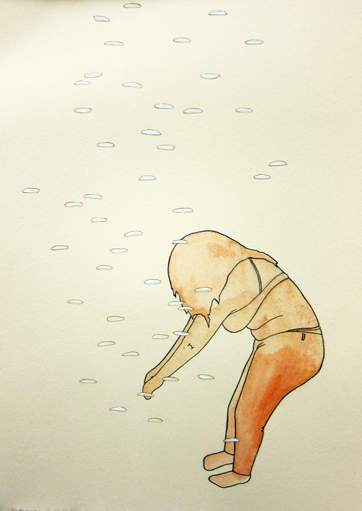
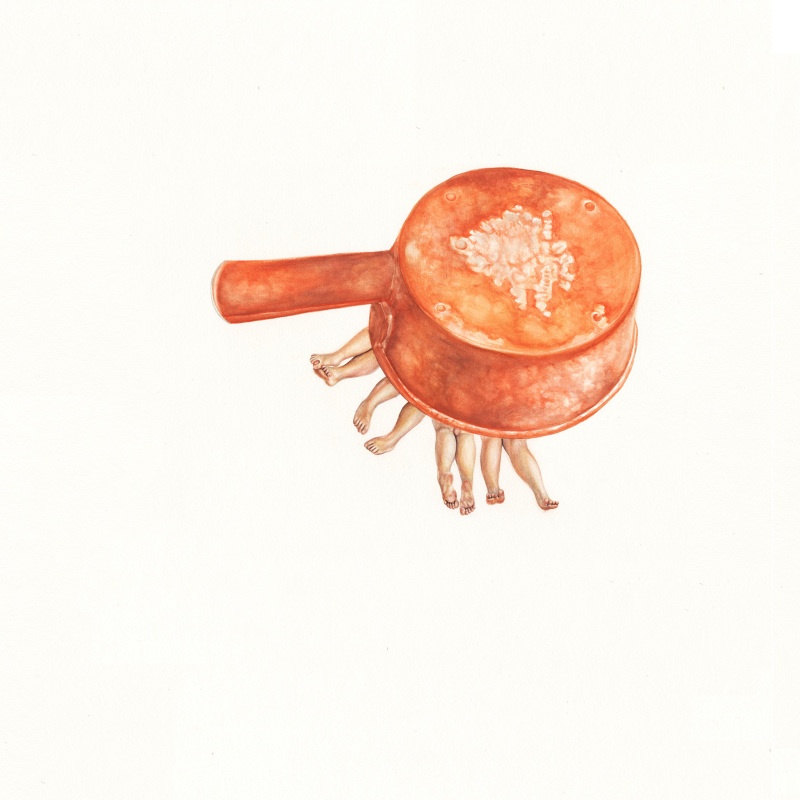

Buttman's 20 Minute Workout, Gouache on watercolor paper.
TRAPS
I placed each trap on opposite ends of my counter. The ants frenzied at the new smell. They poured in from all corners, streaming through leaving tiny sticky trails on their way out. None fell. Maybe my mixture was wrong. Too much sweet and just enough poison to send them off with a buzz. Isn’t that what we like too?
I watched a coordinated huddle carry something to the pool.
I’d hoped it was just an oak tassel, but it was a tent worm. Flaccid and firm at the same time, prickly with hairs, taupe from rot. They brought it to soak up the syrup I’d made for them. I watched them roll it around, its hairs filling with droplets, and its body bloating just slightly. I’m sure they meant to bring it back to the nest so they could all eat straight through the body.

Rice, Gouache on watercolor paper.
CONDENSATION
My house was in the country on a big grassy hillside. Large and white with wood floors. Rain began drizzling through the ceilings on both stories. Fat droplets and streams raining down on everything I own. Exaggerated “drip” sounds. Attempts to rescue my belongings were pointless and sad. I gave up and went outside. It was just misting out. Cool air and thick, stagnant mist. The house was so cold that the mist condensed on it like dew, and it leaked inside. I didn’t feel sad or a sense of loss after discovering the cause. It was too lovely to be angry with.
There was a swing set right at the edge of the hill, and I took up a swing and looked at the stars and the mist. The house filled with water, and the sky was star-filled, purple and navy.

To Collect the Cream, Gouache on watercolor paper.
TOSTITOS®
We were in the ocean, bobbing with the currents. She opened a bag of Tostitos®. Lowering them into the water, she said, "These are good like this." The bag filled. "They're sea salty."